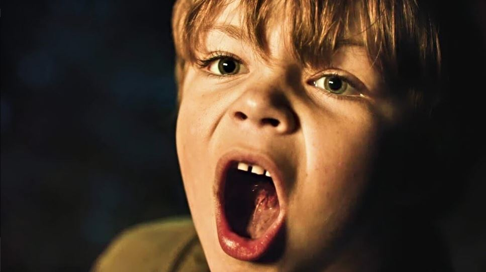

"Speak No Evil, la sátira hecha terror"
Volver a Películas
Por mucho que amemos las películas de terror, los fanáticos del género debemos aceptar una
de sus
mayores fallas. Y es que, igual que pasa con las películas de Marvel y DC, nuestros
protagonistas predilectos suelen ser constantemente salvados por el plot armor.
¿Cuántas
franquicias slasher de los 80 continuan con su héroe o heroína original aun de pie? Ni
siquiera
necesitamos retrotraernos tan atrás en el tiempo. Pensemos en cualquier película de terror
actual, y muy probablemente encontraremos personajes que no pueden ser destruidos ni por el
más
paranormal y sádico de los entes. El director Christian Tafdrup reflexionó sobre este
hecho, y
nos trajo una de las mejores historias del 2022. Acompáñanos en nuestra reseña de Speak No
Evil
(2022) para saber de qué hablamos.
Dirección: Christian Tafdrup
Guion: Christan Tafdrup, Mads Tafdrup
Reparto: Morten Burian, Sidsel Siem Koch, Fedja van Huêt, Karina Smulders
Género: Terror
País: Dinamarca
Trailér